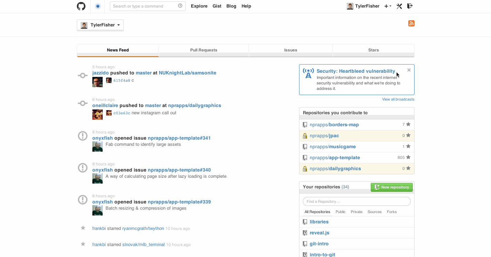

Advanced GitHub
Tyler Fisher | @tylrfishr
The command line
Mac: Terminal.app
Windows: Git Shell

The command line allows you to navigate your filesystem quickly and use programs like git.
Rule #1
Don't be afraid. You can't blow up your computer.
Rule #2
Spelling, capitalization, “grammar”: it all matters.
Some basic commands
pwd- Print working directory: shows you what folder you are in on your filesystem.
mkdir [name-of-new-directory]- Make directory: Create a folder on your filesystem
cd [path/you/want/to/go/to]- Change directory: Change your working directory.
ls- List directory: Shows all of the files and folders inside your working directory.
touch [file-name]- Create an empty new file.
cp [path/to/file] [new/path]- Copy a file to a new location.
mv [path/to/file] [new/path]- Move a file to a new location.
Git commands
git init- Create a new git repository in your working directory
git status- See the current state of the git repository, including what files have changed since the last commit.
git add [file-to-be-added]- Add a file to the staging area.
git commit -m "commit message"- Commit the files in the staging area and add a commit message.
Interacting with GitHub
Make a repo on GitHub
git remote add origin git@github.com:[username]/[repo-name].git- Attach your local repository with the repository you created on GitHub.
git push -u origin master- Push all of your commits to GitHub.
Workflow
- Make changes
git statusto see what changedgit addthe files to commitgit commit -m "message"to commit to your local repositorygit push origin masterto push changes to GitHub.
Collaborating
git pull origin master- If someone else pushes changes to a repository you're working on, pull changes just like you push changes.
Postwork
Complete try.github.io
Screenshot the page after you click "Wrap it all up" and email it to me at tyler@tylerjfisher.com.